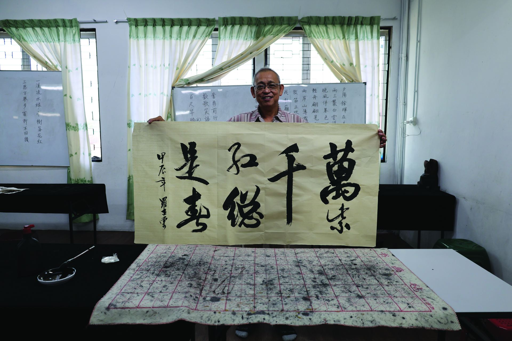
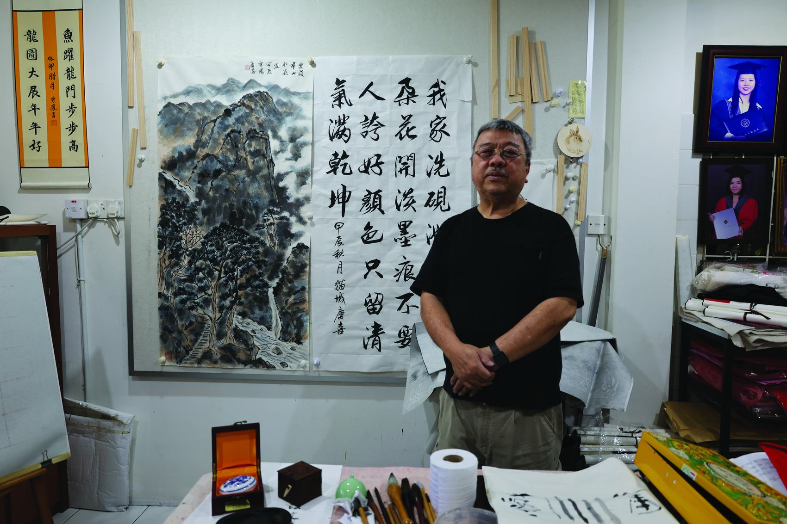
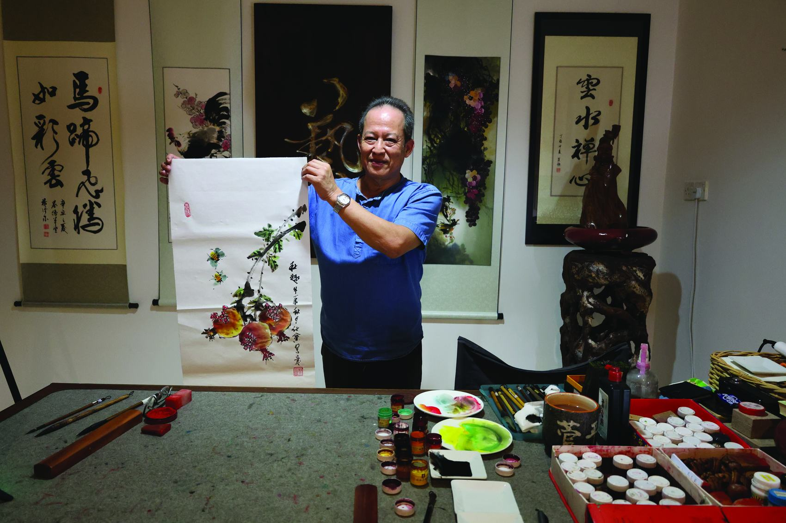
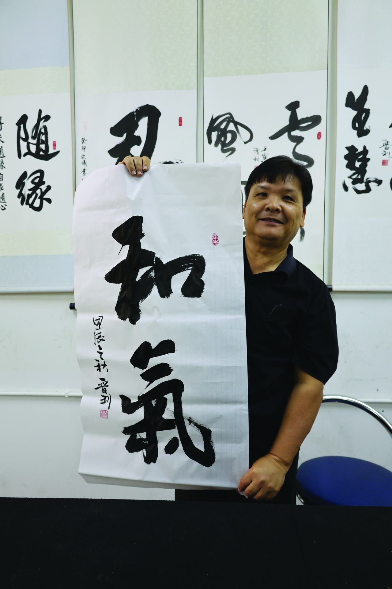
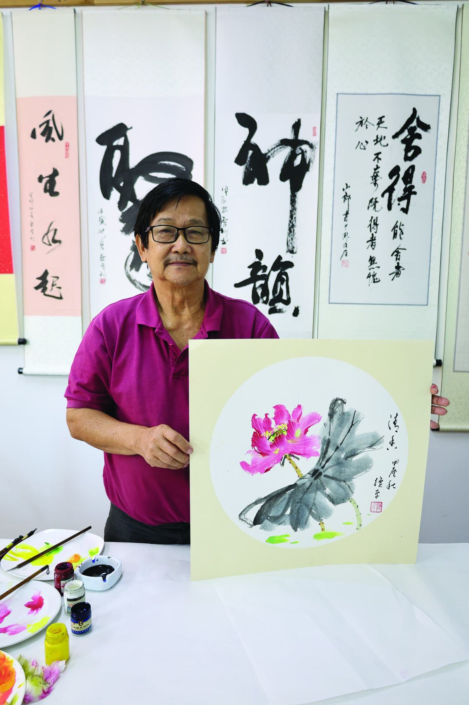

Chinese Calligraphy
Digital Archiving and Storytelling
- Location
- Kuching, Sarawak
- Focus
- Chinese calligraphy heritage
- Method
- Film, photography & oral history
More than ink on paper.
Chinese calligraphy is more than ink on paper — it is memory, identity, and the quiet rhythm of tradition. Digital Archiving and Storytelling in Chinese Calligraphy weaves together the strokes of the brush with the voices of its keepers, capturing both craft and story through film, photography, and oral histories.
This work transforms a fading cultural practice into a living, accessible archive, inviting audiences not only to witness but to journey into the heart of an art form where each character carries centuries of meaning.
How can digital archiving and storytelling techniques be used to preserve and transmit the cultural heritage of Chinese calligraphy in Kuching for future generations?The research question

A tradition thinning between generations.
Chinese calligraphy, a vital expression of cultural identity, blends artistic mastery with historical and philosophical depth. In Kuching, its practice faces decline due to shifting lifestyles and limited intergenerational transfer.
Traditional preservation has centered mainly on the physical works themselves, while intangible elements — stories, techniques, and personal histories — remain at risk of being lost. This project addresses that gap by exploring how digital archiving and storytelling can safeguard both the visual and narrative heritage of calligraphy through virtual reality, photography, and oral histories.
A living, accessible repository.
The project offers a multimedia preservation model that integrates documentary storytelling with archival principles. It captures Chinese calligraphy's tangible artistry and intangible cultural narratives in a living, accessible repository.
By situating the work within Kuching's unique cultural context, it demonstrates how traditional art forms can be documented and revitalised through digital technologies — providing an adaptable framework for other heritage preservation initiatives.


An art form where each character carries centuries of meaning.

Beyond static archiving, into living tradition.
The significance of this research lies in its ability to safeguard a vulnerable cultural heritage while enhancing public appreciation and intergenerational connection. By combining preservation with storytelling, the project moves beyond static archiving, enabling audiences to experience calligraphy as a living tradition shaped by personal histories, community identity, and cultural continuity.
Serves the Chinese community in Kuching as a cultural time capsule, transmitting values and aesthetics to future generations.
Moves beyond static archiving, letting audiences experience calligraphy as a tradition shaped by personal histories.
Offers cultural policymakers, educators, and heritage institutions worldwide an adaptable preservation framework.
Bridging ancient and digital tongues.
On a broader scale, this work demonstrates how digital tools can be strategically applied to preserve art forms that rely on embodied practice — offering insights for cultural policymakers, educators, and heritage institutions worldwide.